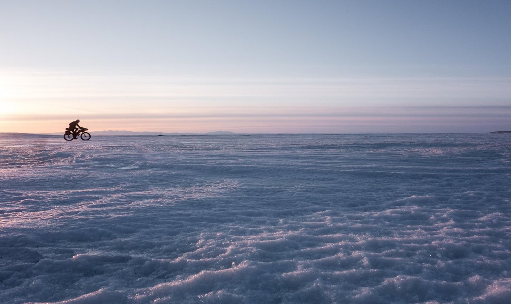

The Tour de France is an annual multiple stage bicycle race primarily held in France, while also occasionally making passes through nearby countries. Like the other Grand Tours, it consists of 21 stages over a little more than 3 weeks.
Oct. 27 will mark the 12th edition of Red Bull Rampage where 21 of the world’s greatest freeride mountain bikers will descend upon Virgin, Utah’s other-worldly terrain.

The Iditarod Trail Invitational is the world's longest winter ultra marathon by fat bike, foot and ski and follows the historic Iditarod Trail from Knik, Alaska over the Alaska Range to McGrath and to Nome in late February every year one week before the Iditarod Sled Dog Race.
